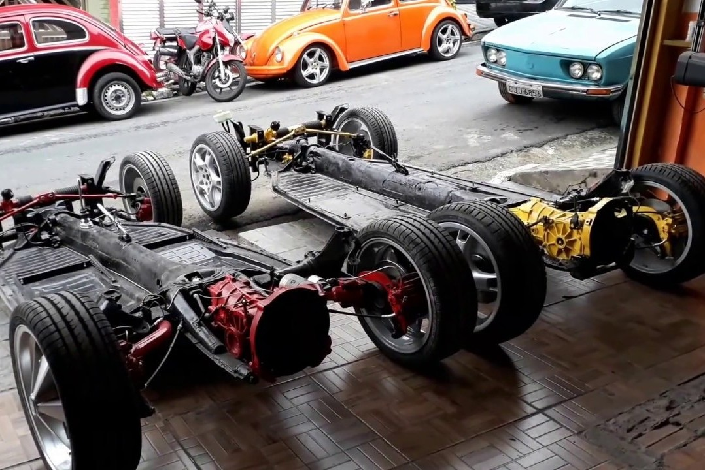
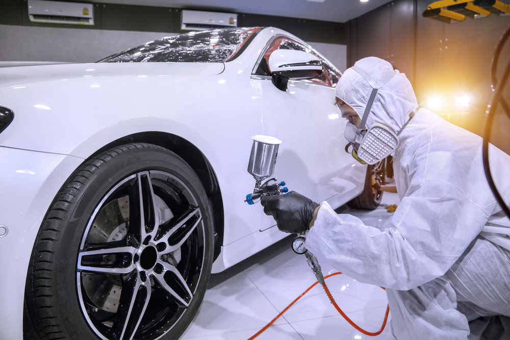

Na Garage Prime Customs, oferecemos um leque completo de serviços para transformar seu veículo. Combinamos técnica, paixão e os melhores componentes do mercado para entregar resultados que vão além da estética, focando em performance e durabilidade. Cada carro que entra em nossa oficina é tratado com o máximo respeito e atenção aos detalhes.

Restauração Completa de Clássicos
Este é o nosso serviço de assinatura. Realizamos a desmontagem total do veículo (frame-off), catalogando cada peça. A carroceria é tratada, o chassi alinhado e toda a lataria é preparada para receber uma nova vida. Respeitamos a originalidade ou seguimos o projeto de customização dos seus sonhos.

Performance e Upgrade de Motor
Para quem busca mais potência, oferecemos projetos de preparação de motores, desde ajustes finos (remap) até a instalação de superchargers e turbos. Trabalhamos com as melhores marcas de pistões, bielas, comandos de válvulas e sistemas de injeção para extrair o máximo do seu motor com segurança e confiabilidade.

Pintura e Customização
A pintura é a alma de um projeto. Nossa estufa profissional e coloristas experientes garantem um acabamento impecável, seja em cores sólidas, metálicas, perolizadas ou nos exclusivos flakes e pinturas kandy. Além da pintura, criamos projetos de customização que incluem body kits, rodas e interiores personalizados.